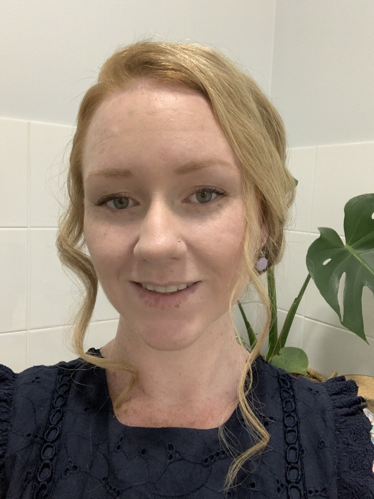

Family
Family is really important to me and I love spending time with my kids. I have 8 year old twin girls who keep me very busy. Exploring new places, catching up with friends and snuggling on the couch.

Family is really important to me and I love spending time with my kids. I have 8 year old twin girls who keep me very busy. Exploring new places, catching up with friends and snuggling on the couch.
I live in the beautiful and busteling town of Port Hedland in the Pilbara region of Western Australia. Port Hedland is known for its iron ore industry, warm weather and beaches.

My education and qualifications inlude:
For over 10 years I have worked in the mining industry. I enjoy the challenges and have been part of many big achievements. Most recently I have moved into Rail and am loving the opportunities this has given me.

Dancing is fun! Who doesnt love dancing..? I started taking lesson in Jazz and Tap when I was about 5 years old. Since then I have studied other geners including Hip Hop, Contemporary and Heels. My children also enjoy dancing and now I help teach dance on my days off.

I aspire to be a positive role model for my children through championing women's rights and equality. In my career I have sought roles which allow me to challenge gender norms
